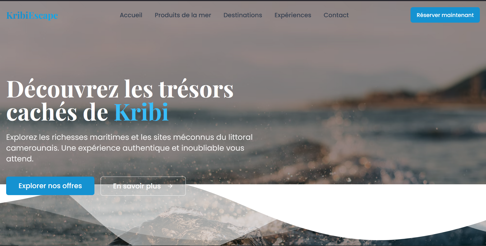
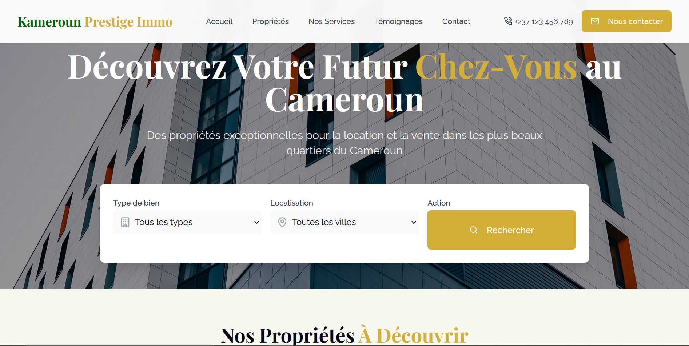
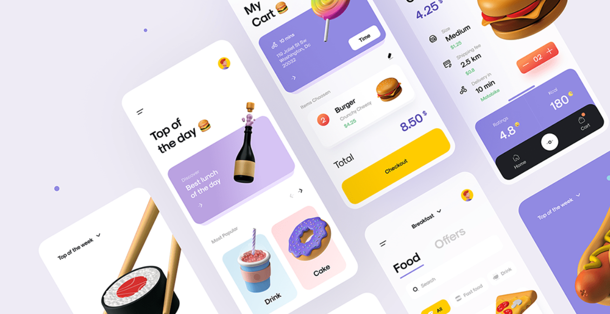

Quelques projets recents
Nous avons réalisé pour le restaurant Foodle une site vitrine ameliorant sa présence en ligne, et lui offrant une plus grande visibilité synonyme d'une clientelle bien plus variée. Cliquer ici pour en savoir plus sur Foodle cliquer sur le boutton en dessous de l'illustration.

Le reflet web du restaurant Foodle
Voir le siteJ'ai eu le plaisir de realiser le site vitrine de l'agence de tourisme balnéaire Kribi Decouverte, avec pour objectif de transmettre l'evasion dès la première visite grace à un design immersif, des visuels captivants et une interface intuitive. Cliquer ici pour en savoir plus sur kribi Decouverte cliquer sur le boutton en dessous de l'illustration
Le reflet web d'une agence de tourisme Kribi Sea
Voir le sitePour le compte de l'agence immobilière kameroun Prestige Immo j'ai conçu un site vitrine moderne et épuré, pensé pour valoriser leurs offres immobilières tout en garantissant une navigation fluide et professionnelle aux visiteurs. Cliquer ici pour en savoir plus sur Kameroun Prestige Immo cliquer sur le boutton en dessous de l'illustration
Le reflet web d'une agence immobilière kameroun Immo Prestige
Voir le siteDans le cadre de mes traveaux, j'ai travailler sur la maquette de plusieurs applications web et mobile. Cliquer sur le boutton en dessous de l'illustration pour en savoir plus. 
Maquette d'application
Voir